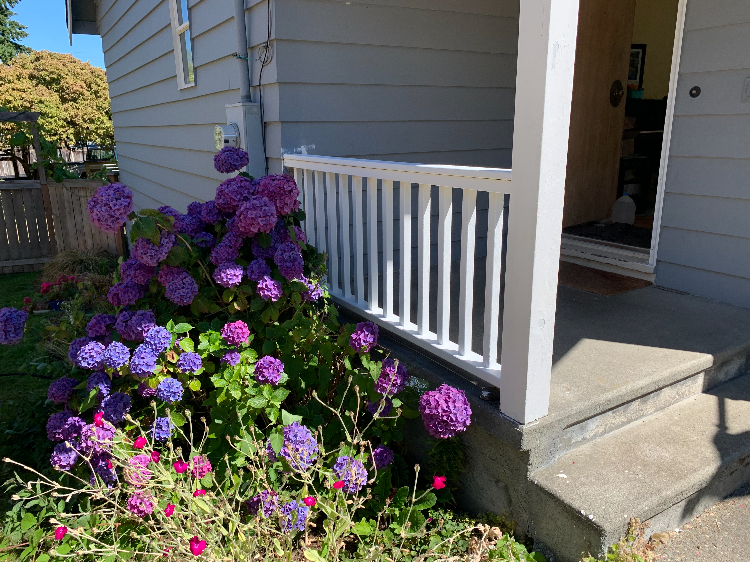
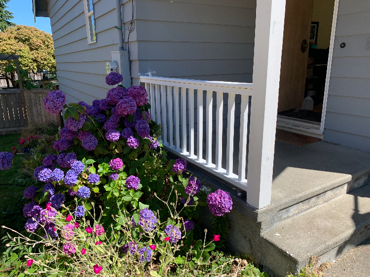

Before and after, updated porch railing for the homeowner's front porch.
 



Thanks for visiting! I have highlighted my construction related experience with
remodels, fencing, and landscaping. I have spent a few years learning
from folks who have many years of experience in the maintenance and/or general
contracting business.
If you're interested in technological help, I have my Bachelor's of Science in Computer Science
which gives me a solid grasp on technology and problem solving for your tech needs.
My goal is to provide quality service with professionalism to people in Bellingham. I enjoy
spending my time working on projects that will improve my client's life. Sometimes that looks like
projects around the house, other times working with those less technologically inclined to navigate
our tech focused world.
Please feel free to contact me for inquiries about repairs, landscaping, technology,
or other related services. If you are unsure, it doesn't hurt to ask!